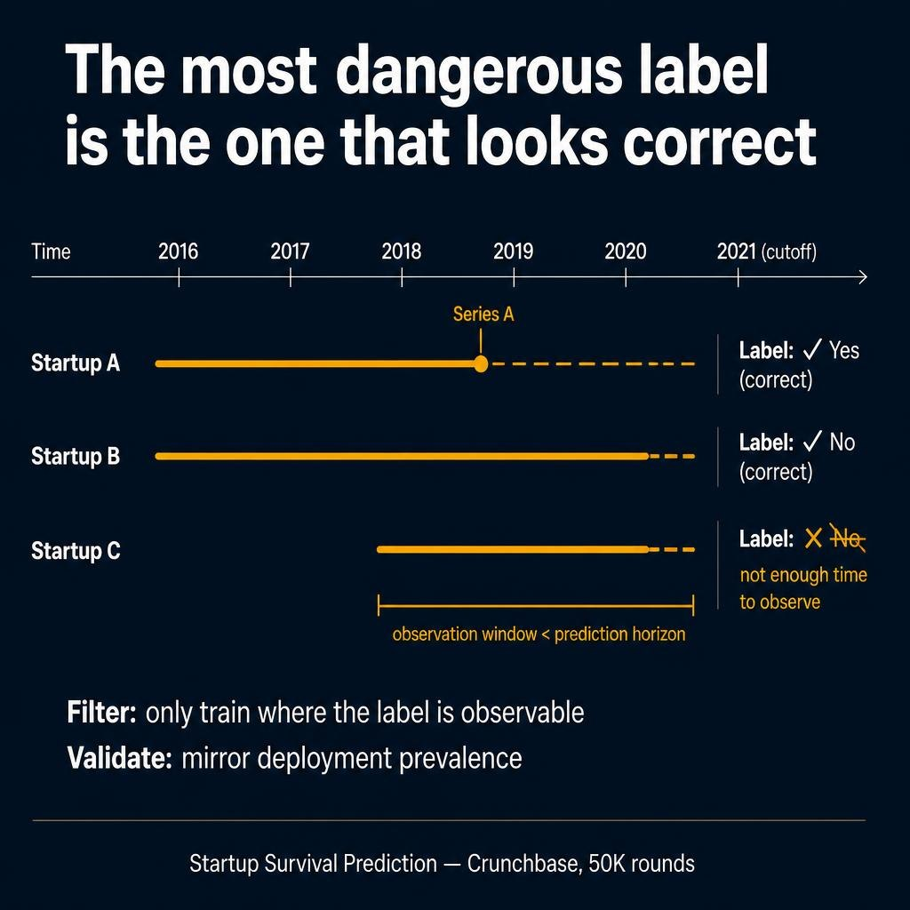
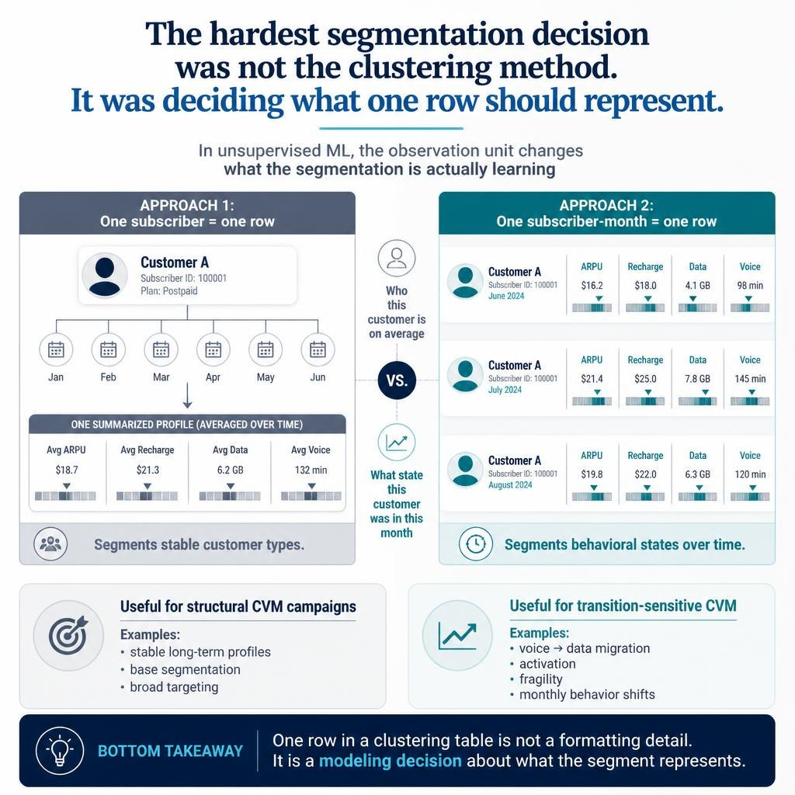

Overview
This project built a full customer segmentation system for telecom CVM operations. It had two phases: unsupervised clustering to discover behavioral segments, then supervised classification to assign new customers to those segments using interpretable business rules.
The main challenge was not the clustering algorithm. It was the series of design decisions that came before and after: defining what one row should represent, making variables compatible with distance-based methods, iterating until clusters became operationally meaningful, and bridging the unsupervised output to a production-ready assignment system.
The project combined representation design, variable shaping, clustering experimentation, telecom-specific profiling, and supervised rule extraction to produce actionable segment structures rather than just mathematical clusters.
Architecture

📋 View detailed text-based architecture diagram
┌─────────────────────────────────────────────────────┐
│ PHASE 1: UNSUPERVISED DISCOVERY │
└─────────────────────────────────────────────────────┘
┌─────────────────────────────────────────────┐
│ Raw Telecom Behavioral History │
│ recharge, usage, voice, data, mobility │
│ campaign response, handset, network usage │
└──────────────────────┬──────────────────────┘
│
▼
┌─────────────────────────────────────────────┐
│ Observation Unit Design │
│ option A: one subscriber = one row │
│ option B: one subscriber-month = one row │
└──────────────────────┬──────────────────────┘
│
▼
┌─────────────────────────────────────────────┐
│ Feature Preparation Layer │
│ zero-replacement, capping, transforms │
│ skewness / kurtosis filtering │
└──────────────────────┬──────────────────────┘
│
▼
┌─────────────────────────────────────────────┐
│ Variable Reduction │
│ correlation + domain curation │
│ 174 candidates → 49 retained │
└──────────────────────┬──────────────────────┘
│
▼
┌─────────────────────────────────────────────┐
│ Clustering Layer │
│ K-means compression → Hierarchical (Ward) │
│ multiple iterations + normalization trials │
└──────────────────────┬──────────────────────┘
│
▼
┌─────────────────────────────────────────────┐
│ Profiling and Redesign Loop │
│ represent → cluster → profile → rethink │
│ → rebuild (multiple iterations) │
└──────────────────────┬──────────────────────┘
│
▼
┌─────────────────────────────────────────────┐
│ Operational Segments for CVM │
│ Data Addicts, High Consumers, Jeunes, │
│ Old Loyal, MultiSIM, Fragile, etc. │
└──────────────────────┬──────────────────────┘
│
▼
┌─────────────────────────────────────────────────────┐
│ PHASE 2: SUPERVISED ASSIGNMENT │
└─────────────────────────────────────────────────────┘
┌─────────────────────────────────────────────┐
│ Decision Tree on Labeled Clusters │
│ extract splitting rules and thresholds │
└──────────────────────┬──────────────────────┘
│
▼
┌─────────────────────────────────────────────┐
│ Business Threshold Adjustment │
│ round values, ensure interpretability │
│ validate with CVM / marketing teams │
└──────────────────────┬──────────────────────┘
│
▼
┌─────────────────────────────────────────────┐
│ Production Assignment System │
│ score new customers (short history) │
│ monthly re-assignment, stable segment IDs │
└─────────────────────────────────────────────┘
The Core Idea
The first segmentation question was not about the clustering method.
It was about a more fundamental design choice: what should one observation represent? Whether the variables can even coexist in a shared distance space? Whether the clusters, once produced, actually mean something to the business? And how to make the segmentation production-ready for customers who arrive after the model was built?
Each of these questions required a different type of thinking:
- Observation-unit design — a customer average or a monthly behavioral state
- Variable clusterability — making distributions compatible with distance methods
- Iterative profiling — turning statistical clusters into business-readable identities
- Supervised assignment — bridging unsupervised output to production scoring
Observation Unit Design

With months of behavioral history per subscriber, the first design question was: what exactly should one row in the analytical base table represent?
That question sounds simple. It is not. Because the answer determines what type of segmentation the algorithm can even produce.
Two valid approaches
Approach A — One Subscriber = One Row
Collapse the behavioral window into one profile per customer: average usage intensity, average recharge frequency, average data consumption.
What you segment: customers as stable entities.
Good for: long-term CVM strategy, structural campaigns, customer typology.
Approach B — One Subscriber-Month = One Row
Keep each monthly snapshot as a separate observation. The same subscriber in March, April, and May becomes three different rows.
What you segment: behavioral states over time.
Good for: detecting transitions, early warning signals, lifecycle modeling.
That single design decision changes the entire segmentation output. A person-level segmentation produces stable long-term profiles. A month-level segmentation reveals movement: from low usage to activation, from voice-heavy to data-heavy behavior, from engaged to fragile.
Selected code: aggregated subscriber behavioral profile
/* Approach A: one subscriber = one row */
/* Collapse N months into average behavioral profile */
select subscriber_id,
sum(recharge_amount) / history_months as avg_recharge_amount,
sum(recharge_count) / history_months as avg_recharge_count,
sum(recharge_days) / history_months as avg_recharge_days,
sum(weekend_recharge) / history_months as avg_weekend_recharge,
case when sum(recharge_count) > 0
then sum(recharge_amount) / sum(recharge_count)
else 0 end as avg_recharge_value,
case when sum(recharge_count) > 0
then sum(recharge_days) / total_days_in_window
else 0 end as recharge_frequency
from subscriber_recharge_monthly
group by subscriber_id;
Design insight: The question "which clustering method?" must come after the question "does the business need stable customer types or changing customer states?" The unit of analysis is a modeling decision, not a formatting detail.
Iterative Profiling and Redesign

Useful segments did not emerge from running one clustering method once. The final segmentation came from repeated cycles of representation, clustering, profiling, and redesign.
The business cannot act on Cluster 1, Cluster 2, Cluster 3. Operations needs identities it can recognize: young prepaid users, data-heavy consumers, old loyal subscribers, multisim households, fragile low-activity profiles.
The iteration loop
Some iterations were statistically acceptable but not operationally useful. Others looked clean mathematically but grouped customers in ways that business teams could not act on. The loop continued until segments became recognizable and targetable.
Profiling dimensions per iteration
- Recharge behavior — frequency, regularity, weekend patterns, top-up value distribution
- Voice vs data mix — usage intensity by service type, on-net vs off-net split
- Handset quality — 2G / 3G / 4G device capability, device change frequency
- Network community — graph degree, community size, operator mix in social group
- Region and mobility — geographic footprint, number of distinct cell towers visited
- CVM response — campaign sensitivity, offer activation behavior, response to promotions
- Churn signals — inactivity days, declining usage trends, recharge evaporation patterns
Selected code: profiling segment behavior
/* Profile each segment across key behavioral dimensions */
select segment_id,
count(distinct subscriber_id) as segment_size,
avg(recharge_amount) as avg_recharge,
avg(total_voice_duration) as avg_voice_minutes,
avg(data_volume) as avg_data_volume,
avg(data_pack_count) as avg_data_packs,
avg(active_days) as avg_active_days,
avg(distinct_cell_towers) as avg_mobility,
avg(community_degree) as avg_graph_degree
from segmented_subscriber_table
group by segment_id;
/* Cross-tabulation: handset type distribution per segment */
select handset_generation,
count(case when segment_id = 1 then subscriber_id end) as seg_1,
count(case when segment_id = 2 then subscriber_id end) as seg_2,
count(case when segment_id = 3 then subscriber_id end) as seg_3,
count(case when segment_id = 4 then subscriber_id end) as seg_4
from segmented_subscriber_table
group by handset_generation;
Design insight: Unlike supervised learning, there is no target variable to tell you whether the representation is right. Good segmentation is designed through iteration. The iteration is not optional — it is the method.
Variable Clusterability

The raw feature space had extreme distributions. Some variables were not just skewed — they were wildly skewed. A few had long tails so extreme that standard scaling alone would make the distance geometry unstable.
So before reducing redundancy, the project had to answer a more basic question: can these variables even live in the same clustering space?
The problem: incompatible distributions
- Recharge variables with skewness above 5
- Voice duration variables with skewness above 8
- Off-net usage with skewness above 40
- Some internet volume variables with kurtosis above 1000
Variable-specific transformation strategy
LOG
Moderate skew (1–3)
Applied to: avg call duration, community size, cell tower count, SMS volume, internet app usage
SQRT
Light skew
Applied to: active days ratio, 4G usage percentage, off-net duration share, data sharing percentage
Power ^0.25
Heavy skew (5+)
Applied to: recharge amount, total revenue, competitor-network duration, total data volume
EXP
Reverse / compressed
Applied to: multi-SIM flag, data pack percentage, 3G usage percentage
Selected code: transformation pipeline output
/* Transformations applied per variable (automated pipeline output) */
/* Each variable gets the transform best suited to its distribution */
recharge_amount: power_transform → (max(value, 0) / scale_factor) ^ 0.25
avg_call_duration: log_transform → log(max(value, 0) / scale_factor + 1)
community_size: log_transform → log(max(value, 0) / scale_factor + 1)
active_days_ratio: sqrt_transform → sqrt(max(value, 0) / scale_factor)
four_g_usage_pct: sqrt_transform → sqrt(max(value, 0) / scale_factor)
offnet_duration_share: sqrt_transform → sqrt(max(value, 0) / scale_factor)
total_data_volume: power_transform → (max(value, 0) / scale_factor) ^ 0.25
multi_sim_indicator: exp_transform → exp(max(value, 0))
data_pack_pct: exp_transform → exp(max(value, 0))
/* Pipeline summary */
/* Input: 174 candidate variables */
/* Retained: 49 variables (transformable + stable shape) */
/* Rejected: 49 variables (no transform achieved stable shape) */
/* Rejection reason: distributional shape, not correlation */
The result: skewness killed more variables than correlation did. Many features were not removed because they duplicated information — they were removed because no transformation could make them behave well enough for distance-based clustering.
Design insight: In distance-based unsupervised learning, bad variable shape is often a bigger problem than variable redundancy. Before asking whether two variables are too similar, make sure each one is even representable in a stable distance space.
Compression Before Structure

With hundreds of thousands of subscribers, hierarchical clustering cannot run directly. Its complexity is quadratic — it would require computing all pairwise distances.
K-means scales linearly, but used alone it can flatten nested structure. It finds compact groups, but misses the hierarchical relationships between them.
The practical solution: use both algorithms in sequence, where K-means acts as a compression layer — not as the final segmentation.
Two-stage pipeline
Stage 1: K-Means Compression
Compress the full subscriber base into many representative centroids. Fast, scalable, captures local density patterns. Each centroid represents a group of behaviorally similar customers.
Stage 2: Hierarchical Clustering (Ward)
Run Ward's method on the centroids. Finds nested structure, natural segment boundaries, and the optimal number of clusters. Produces a dendrogram for visual interpretation.
Selected code: two-stage clustering
/* Stage 1: K-means compression */
/* Reduce full subscriber base to representative centroids */
proc fastclus data=normalized_subscriber_features
maxclusters=1000
out=compressed_centroids;
var feature_1 - feature_49;
run;
/* Stage 2: Hierarchical clustering on centroids */
/* Find nested structure using Ward's minimum variance method */
proc cluster data=compressed_centroids
method=ward
outtree=dendrogram_output;
var feature_1 - feature_49;
run;
/* Cut dendrogram at chosen level */
proc tree data=dendrogram_output
nclusters=8
out=final_segment_assignment;
run;
Design insight: The first algorithm is not the segmenter — it is the reducer. In large-scale unsupervised systems, one algorithm can serve as a modeling layer for another, not only as the final answer.
Supervised Rule-Based Assignment

The unsupervised phase gave meaningful clusters. But clusters alone cannot operationally assign new customers.
A subscriber who activated last month has only one or two months of history. The unsupervised model was built on a longer behavioral window. You cannot cluster new customers the same way.
So the supervised phase had a different goal: extract interpretable assignment rules from existing clusters, adjust thresholds with business logic, and apply them to new customers as a production scoring system.
The bridge: from clusters to rules
1. Label
Assign unsupervised segment identities to existing customers as a supervised target variable.
2. Train
Fit decision tree on the labeled data. Compare with neural network and regression as benchmarks.
3. Extract
From the decision tree: extract splitting rules with variable conditions and thresholds.
4. Adjust
Round thresholds to business-meaningful values. Validate with CVM and marketing teams.
Why thresholds need business adjustment
A raw decision tree produces optimal splits — but those splits are often unreadable for business teams. The thresholds are precise numbers with no intuitive meaning.
So the extracted rules were adjusted: values rounded to interpretable levels, conditions simplified to match business vocabulary, edge cases validated with domain experts.
/* Example: raw tree output vs business-adjusted rule */
/* Raw decision tree split: */
if data_revenue_ratio > 0.734
and data_pack_frequency > 2.17
and voice_duration_share < 0.412
then assign → "Data Intensive"
/* Business-adjusted assignment rule: */
if data_revenue_ratio > 0.70
and data_pack_frequency > 2
and voice_duration_share < 0.45
then assign → "Data Intensive"
/* Consequence:
Original unsupervised cluster: ~100K members
Rule-based assignment on full base: may capture 90K or 110K
Acceptable — goal is stability and interpretability, not exact replication */
Selected code: building supervised features for new customers
/* New subscribers: activated in last 1-4 months */
/* Build behavioral features with available (shorter) history */
select subscriber_id,
subscriber_tenure_months,
handset_generation,
avg(recharge_amount) as avg_recharge,
avg(voice_duration) as avg_voice_duration,
avg(data_pack_count) as avg_data_packs,
avg(active_days) as avg_active_days,
avg(offnet_voice_share) as avg_offnet_share
from new_subscriber_behavior
where activation_date > cutoff_date
group by subscriber_id, subscriber_tenure_months, handset_generation;
/* Apply business rules for segment assignment */
/* Monthly re-scoring without re-running unsupervised pipeline */
Models compared during supervised phase
- Decision Tree — primary choice for rule extraction and interpretability
- Neural Network — higher accuracy but black-box, used as accuracy benchmark
- Logistic Regression — baseline interpretable classifier
- Gradient Boosting — ensemble accuracy benchmark
Design insight: Discovery is unsupervised. Assignment is supervised. The bridge between them is rule extraction with business-adjusted thresholds. The model that assigns customers is not the model that discovered the segments.
Why this matters
- Shows that segmentation begins at representation design, not at the clustering node
- Demonstrates that variable shape matters more than variable redundancy for distance-based methods
- Treats profiling as part of the method — not as post-hoc cleanup after clustering
- Avoids treating one algorithm as the full answer — uses K-means as a layer, not an endpoint
- Bridges unsupervised discovery to production-ready supervised assignment
- Produces segments the business can recognize, trust, and act on without re-running the pipeline
Where this pattern generalizes
The same design principles apply in many segmentation settings:
- Banking customers with monthly transaction states
- E-commerce users with lifecycle behavior changes
- Subscription products with engagement-state segmentation
- IoT device populations with operating-state clustering
- Any domain where unsupervised discovery must translate into production assignment rules
The reusable pattern: before clustering entities, decide whether you are clustering people, states, or transitions. Then bridge from discovery to operational rules.
Key Takeaway
The hardest segmentation decision was not the clustering method.
It was defining what one row should represent, making the variables clusterable, iterating until clusters became operational segments, and then bridging unsupervised discovery to supervised rule-based assignment for production use.
Public Repository Scope
This public version shares the segmentation architecture, methodological framing, selected pseudocode, and project presentation. Raw telecom data, confidential schemas, monetary values, and production identifiers are not included.